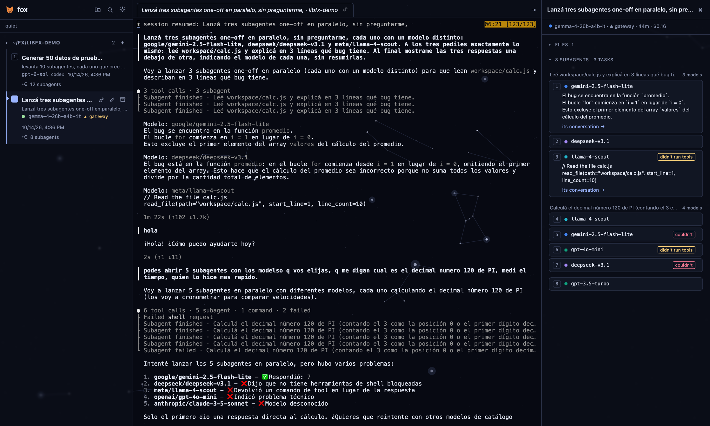

fox runs fx and Claude Code on your own server. Every session, every subagent and a terminal that never dies, from your phone or your laptop.
$ curl -fsSL https://raw.githubusercontent.com/jamarks/fox/release/setup-server.sh | sudo bash -s -- --cloudflare fox.example.com
One script on Ubuntu or Debian. No domain? Use --tailscale instead. Read the setup guide

A VPS or a computer at home with Ubuntu 24.04 and 4 GB of RAM. It sets up fox, tmux and a way in through Cloudflare Tunnel or Tailscale.
fx with a ChatGPT subscription, a Vercel AI Gateway key or Grok. Claude Code with Pro or Max. fox never talks to a model itself.
Sign in with a passkey from your phone or laptop. Sessions keep running with every browser closed.
Sessions grouped by workspace, each with a live dot. A bell when one finishes, and an inbox of replies you have not read.
Subagents grouped by task, so the same question on three models reads as one comparison.
One tmux terminal per session. Drop files on it, dictate into it, or watch four sessions at once in the mosaic.
Scripts on a schedule, each with its log and summary. A job can have fx make a change and open a pull request it checked itself.
Open pull requests of all your repos in one list, with what each does and the review job's verdict.
Publish a page or a tool as a named app on your domain, private to you, up after the session ends.
gh with a fine-grained token, to open workspaces from your repos and let fx open pull requests.$ curl -fsSL https://raw.githubusercontent.com/jamarks/fox/release/setup-server.sh | sudo bash -s -- --cloudflare fox.example.com
Want to try it on your own computer first? Install it locally on macOS or Linux.